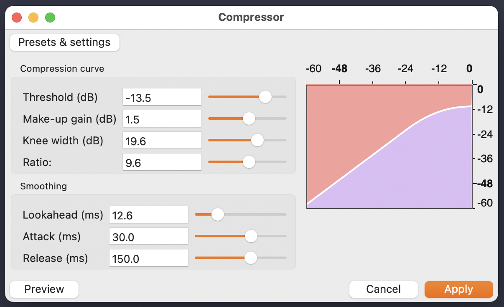
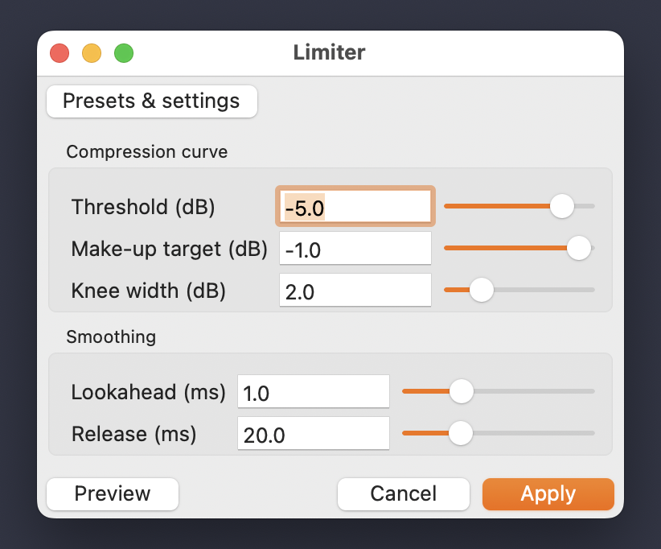

You've worked with the interactive dynamics tool for this session, which lets you move a compressor's parameters and hear what happens. This reading walks through the same parameters in Audacity itself: where the menus are, what each control is called, what's different from the tool, and what settings to start from when you're compressing or limiting sounds for Project 1. Compression and limiting are the last two effects you'll apply before exporting your final piece. Read this once now, and once again with Audacity open before Wednesday's work session.
Take from the lab's gear storage: audio interface, headphones. Plug in and run through the start-of-session steps on the Session Routines card before continuing here.
Audacity 3.6 groups its dynamics processors under . Two of the items in that submenu matter for this module: Compressor and Limiter. Both effects share the same processing engine internally, which is why their interfaces look almost identical. Once you know one, you mostly know the other.
You'll also see Legacy Compressor and Legacy Limiter further down the same submenu. These are the older versions that shipped with Audacity 3.5 and earlier. They still work, but the controls are laid out differently and most of the documentation online assumes the new versions. Stick with the non-legacy Compressor and Limiter for this course.
Open a track that has some range to it (a recorded vocal line, a varied percussion loop, anything where the loud parts and quiet parts are noticeably different) and go to . You'll see a window like this:

The window has three regions. The big graph at the top is the compression curve, which is the same thing as the transfer curve in the teaching tool: it shows input level along one axis and output level along the other, and it bends below threshold to show how the compressor will reshape the signal. The sliders in the middle (Threshold, Make-up gain, Knee width, Ratio) determine the shape of that curve. The sliders at the bottom (Lookahead, Attack, Release) determine the timing of how the compressor reaches and releases that shape. Audacity calls these timing controls the smoothing parameters.
Threshold is the level above which the compressor starts to engage. Identical to the tool. Set in dB, with 0 dB being the digital ceiling and lower numbers being quieter.
Ratio is how aggressively the compressor reduces signal above the threshold. Same as the tool. A 4:1 ratio means that for every 4 dB the input goes above threshold, the output rises by only 1 dB.
Make-up gain is the boost applied to the whole signal after compression. The tool calls this the same thing. It exists because compression reduces the loud parts and therefore makes the file quieter overall; make-up gain restores the level. Use it when you want the compressed result to feel as loud as (or louder than) the source. Skip it (set it to 0) when you just want to tame peaks without making the overall result louder.
Knee width is the one new control in this section that didn't appear in the teaching tool. It controls how abruptly the compressor engages right at the threshold. At a knee width of 0 dB (a "hard knee"), the compressor does nothing below the threshold and is fully engaged at the ratio immediately above; the transition is a sharp corner. At a wider knee (say, 6 or 12 dB), the compressor starts gradually engaging a few dB before threshold and reaches the full ratio a few dB after, smoothing the corner into a rounded transition. A wider knee sounds gentler and is harder to hear engaging. A narrower knee is more obvious and assertive. For most musical work, a knee width between 3 and 6 dB sounds natural. For aggressive limiting-style compression on transients, 0 (hard knee) is the right choice.
Attack is how fast the compressor engages once the signal crosses the threshold. Same as the tool. Short attack catches transients (kick hits, snare cracks, consonants) and rounds them off; longer attack lets transients pass through and only compresses the body of each hit.
Release is how fast the compressor lets go after the signal drops below the threshold. Same as the tool. Short release recovers between events and can produce audible "pumping" on rhythmic material. Long release holds gain reduction across multiple events for a smoother overall feel.
Lookahead is the other control that's new compared to the tool. It tells the compressor to peek ahead in the signal by some milliseconds, so it can start engaging before a loud peak actually arrives, rather than reacting to the peak after the fact. In practice, lookahead does some of the same work as attack: it lets the compressor catch a transient cleanly without smashing it. The difference is that attack causes a small "overshoot" (the peak briefly passes through before the compressor catches up), while lookahead anticipates the peak and prevents the overshoot at the cost of adding a small amount of latency. Audacity compensates for this latency automatically, so you don't have to think about it. A lookahead of 1 to 5 ms is a sensible starting point for catching transients; longer values are for special creative effects.
The graph updates live as you move Threshold, Ratio, Make-up gain, and Knee width. It doesn't show Attack, Release, or Lookahead, because those are time-varying and a static graph can't show them. The curve encodes the same relationship as the transfer curve in our teaching tool, only rotated so input runs along the top axis rather than the bottom and output runs along the right axis rather than the left.
Audacity lets you apply the compressor in two ways. The first is the traditional way: open the effect, set the parameters, click Apply, and the change is rendered to the audio. The second is realtime use, where the compressor is loaded onto a track's effects stack and processes the signal during playback without rendering anything. In realtime use, the graph at the top of the window grows extra elements: a live trace showing the current input level, the current output level, and the actual gain reduction the compressor is applying. This makes the realtime mode much more informative than the static apply-and-listen mode, and is the recommended way to dial in settings while you can hear them.
Knee width is one of those parameters where you can spend an hour A/B-ing settings and only feel a small difference. Don't worry about it. Set it to 3 or 6 dB and forget it. Knee width matters most when the threshold is sitting right around the average level of the signal (which is when the compressor is opening and closing many times per second), and matters less when the threshold is set well above the average level (which is the case for most compression-as-loudness-management work). If a setting sounds harsh or obvious, try widening the knee; if it sounds invisible when you want it to be doing work, try narrowing it.
The presets shipped with Audacity are a fast way to hear what different settings feel like, accessible through the Presets & settings button. Voice presets are good for spoken word; Beefy Master and Deep Dive Master are good for a finished mix. Try a few and see what they're doing. For starting from scratch on Project 1 material, the recipes below are reliable starting points. Tweak by ear.
Use this when one sound in your bank has loud peaks that stick out of the mix while its average level is too quiet. The goal is to bring the peaks down so you can pull the whole sound up to a useful working level without the peaks clipping.
| Threshold | −18 dB |
| Ratio | 4:1 |
| Knee width | 3 dB |
| Attack | 10 ms |
| Release | 120 ms |
| Lookahead | 2 ms |
| Make-up gain | 0 dB to start; bring up if needed after |
Play the sound. The peaks should be reduced by a few dB. If they're not reduced enough, drop the threshold lower (toward -24 dB). If too much, raise it (toward -12 dB). Once the peaks are tamed, normalize the result to -1 dB peak as a separate step (or use make-up gain to roughly the same effect).
Use this when a kick or snare sample has the right energy but feels flat in the mix. A slow attack lets the transient pass through while the body of the hit gets compressed, which makes the transient feel comparatively bigger.
| Threshold | −24 dB |
| Ratio | 6:1 |
| Knee width | 0 dB (hard knee) |
| Attack | 30 ms (slow) |
| Release | 80 ms |
| Lookahead | 0 ms (don't let it anticipate) |
| Make-up gain | 3 to 6 dB |
The slow attack is the key parameter here. Don't shorten it. Lookahead at 0 is intentional: if it were higher, it would anticipate the transient and start compressing before the strike, which is exactly the effect we're trying to avoid.
Open :

The window looks almost identical to the Compressor. Audacity is being honest about a real relationship: the limiter is a compressor, just one with a few specific design choices baked in. Specifically, the limiter has no Ratio control (it's effectively infinity; nothing crosses the ceiling), and no Attack control (limiters use Lookahead to anticipate peaks instead). Every other control means the same thing it did in the compressor.
Threshold is the level above which limiting engages. With infinite ratio, this is also (effectively) the ceiling: signals above threshold get pulled down so they don't cross. Identical concept to the compressor.
Make-up target is the limiter's version of make-up gain, but it's named differently for a reason. In the compressor, make-up gain is "add this many dB to the output after compression." In the limiter, the make-up target is the maximum output level: "after limiting, the loudest point should sit at this dB value." The practical difference is small in most cases, but the naming is more informative for a limiter, where the output ceiling is the whole point. Setting Make-up target to -1 dB means "after limiting, my peaks will sit at -1 dB and nothing will go above that."
Knee width, Lookahead, and Release work the same way they do in the compressor. Lookahead matters more in the limiter than it does in the compressor, because the whole point of a limiter is to never let peaks through. A lookahead of 5 to 10 ms is typical for a final-mix limiter, which is enough for the limiter to "see" most musical peaks before they arrive and engage gracefully.
The standard use of a limiter is at the very end of your signal chain. You've compressed individual sounds, you've mixed them together, you've set your levels, and now you want to maximize loudness without letting anything clip. The limiter sits at the end of that chain. Run it on your full mix, set the threshold a few dB below 0, set Make-up target to -1 dB, leave the smoothing parameters in their defaults, and listen.
The more aggressively you compress and limit, the less dynamic range your final mix will have (the loud parts and quiet parts will be closer in level). This is sometimes what you want (a wall of sound, a high-energy mix) and sometimes not what you want (a piece that breathes). Listen for it.
Apply this to your finished mix as the last effect before exporting. The goal is to bring the overall level up to a useful loudness without letting any peaks cross 0 dB.
| Threshold | −6 dB |
| Make-up target | −1 dB |
| Knee width | 3 dB |
| Lookahead | 5 ms |
| Release | 100 ms |
Watch the compression-curve graph. If the limiter is doing more than about 4 to 6 dB of gain reduction on the peaks, you're probably over-compressing the mix at this stage and would do better to pull individual tracks down rather than ride the limiter harder. The limiter is for last-mile work, not for fixing a mix that's structurally too loud.
Use this when a sample has the occasional sharp peak that you want to catch without changing the rest of the signal's character. Different goal from the final-mix limiter: this is about preventing distortion on a single problematic hit, not raising the average level.
| Threshold | −3 dB |
| Make-up target | −1 dB |
| Knee width | 0 dB (hard) |
| Lookahead | 3 ms |
| Release | 50 ms |
Most of the signal will sit below threshold and pass through unchanged. Only the occasional peak gets touched.
The order you apply these effects matters. Doing them out of order leads to mixes that feel either over-cooked or under-baked. The pattern below is the conventional sequence for finishing a piece in Audacity.
Step 1: Prepare individual sounds. For each significant sample in your bank, decide whether it benefits from compression. A sample that's already well-behaved (consistent level, no big peaks) probably doesn't need it. A sample with wild dynamics, an unwanted transient, or a flat middle that you'd like to feel punchier almost certainly does. Apply the compressor to the individual sample, save the processed result, and use that version in your mix. Don't compress everything just because you can.
Step 2: Set levels and mix. This is the work you did in last Wednesday's lab. Track-level volume, panning, and balance. Compression at this stage isn't usually appropriate; you're making big-picture decisions about which sounds should be louder than which, and a compressor changing the levels live makes that harder to judge.
Step 3: Apply a limiter to the final mix. Once the mix sounds right, export it to a fresh track or duplicate the project, and apply the limiter as the very last effect. This is where you bring the overall level up to a polished, ready-to-share loudness. Use the recipe above as a starting point. When you export the final WAV, use this module's standard format: 44.1 kHz sample rate, 16-bit PCM.
Step 4: Listen on different systems. What sounds good on headphones may sound different on laptop speakers or in a car. Limiting in particular can sound very different on a small speaker, where the lack of dynamic range can read as "loud and exciting" or "fatiguing," depending on the material. If you can, listen on at least two playback systems before deciding the master is done.
If your limited mix sounds "smaller" than the unlimited one, you've probably pushed the threshold too low. Pull it back up. If the limited mix sounds distorted or harsh, increase the lookahead and lengthen the release. If you can hear the limiter "pumping" (the whole mix audibly ducks down and recovers in time with the loud parts), the threshold is too low or the release is too short. A well-set limiter should be nearly invisible: the mix should sound like itself, just louder.